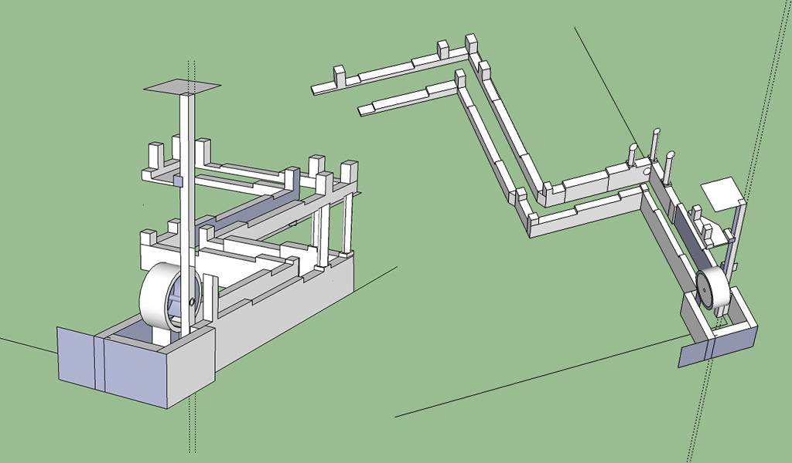
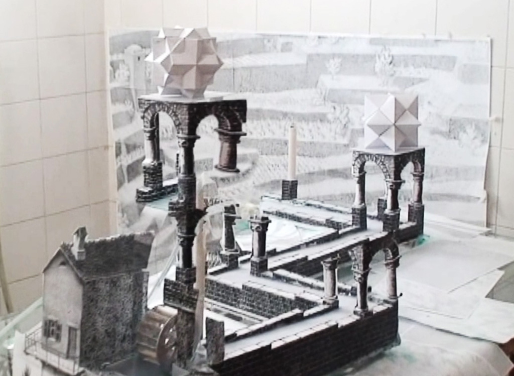
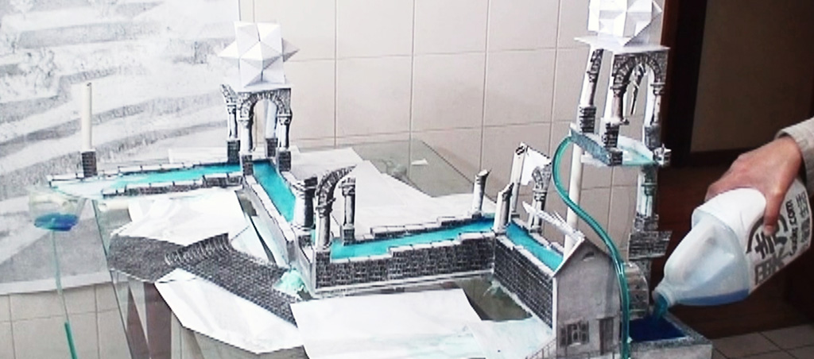

Perpetual Motion Machine
The Real-life Version of M.C.Escher's Waterfall (2011)
An electronic engineer and me created this waterfall perpetual machine – well, not really, but it certainly looks like one. It’s based on Escher’s Waterfall, but it is a real thing and water actually flows through it. We built it using 3D modeling and handcrafting, plus some electronic controls; and later, a companion article explaining how it’s done and all the science in it.



It received half a million video views online, won the top prize of optical illusion from intrustables.com, and got a nice prize for us: a Makerbot 3D printer. To learn the entire making processing, visit http://www.instructables.com/id/Perpetual-Motion-Machine-The-real-life-version-of/